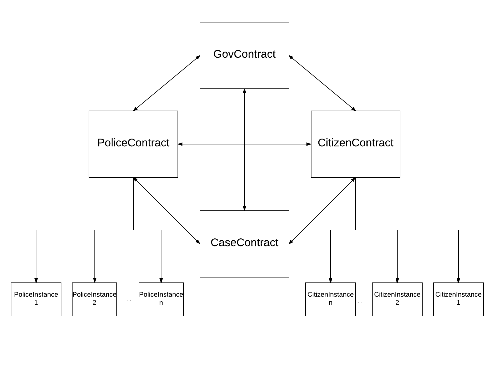

Veliki Sir
- Marko Paroški
- Dimitrije Badnjarević
Introduction
- How did we end up here?
- What are blockchains?
- Fast forward today
- Blockchains as a public good
Presentation software - overview

Presentation software
- What are the goals?
- How we define interactions?
- Benefits
Presentation software - run ze tests!
Conclusion
"First they ignore you, then they laugh at you, then they fight you, then you win."
You can find this project here
https://github.com/OrahKokos